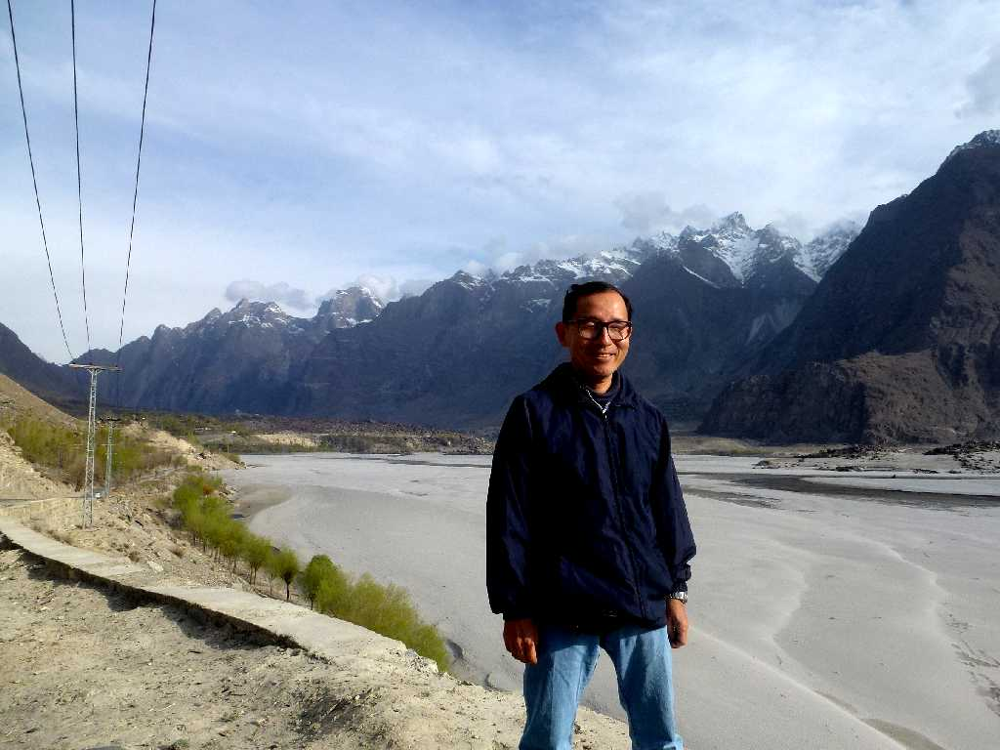
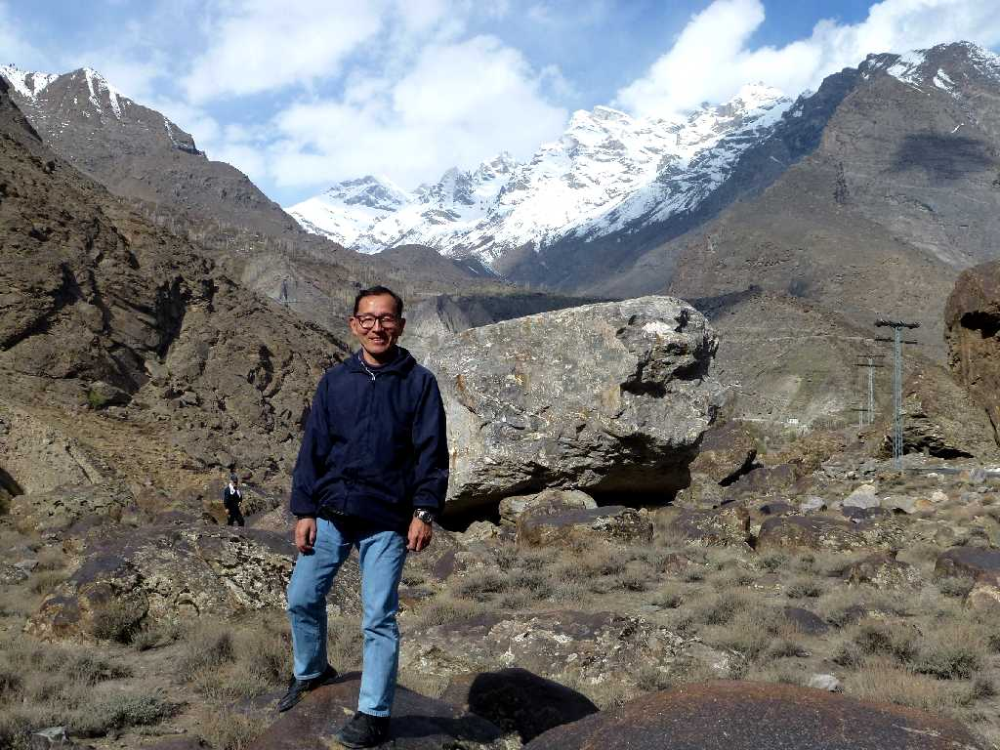
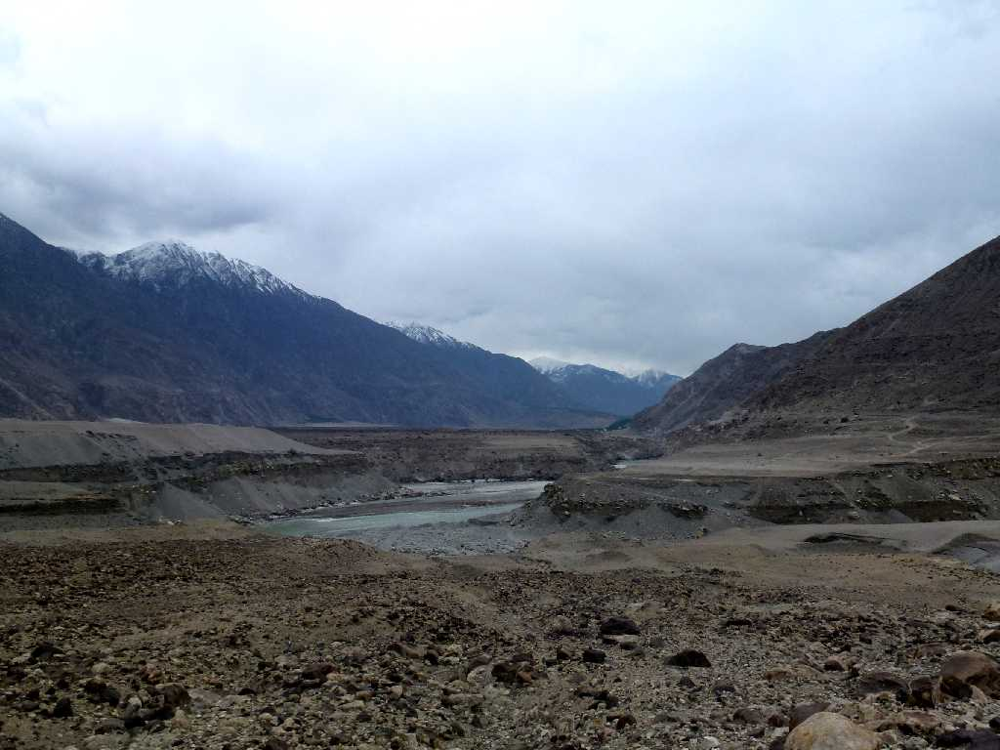
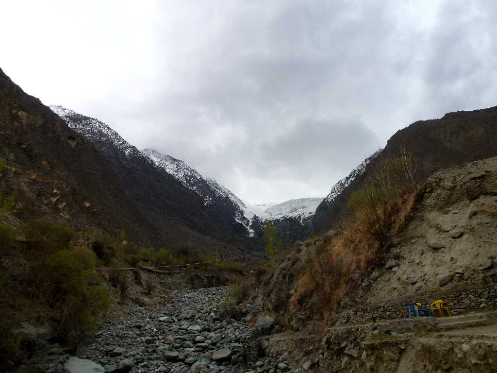

April 1 2013 Skardu Indus River
今日はインダス河上流のスカルドゥ渓谷からギルギット川の合流地点まで下りその後ギルギット川とフンザ川を遡りフンザ渓谷に向かう

April 1 2013 Skardu Indus River
スカルドゥ渓谷から美しいカラコルム山脈を望む

Indus River & Gilgit River Meet Point
インダス河にギルギット川が流れ込む合流地点でヒマラヤ山脈とカラコルム山脈とギルギット山脈の３山脈が出会う地点でもある

Hunza Valley Karakoram
フンザ渓谷からカラコルム山脈を望む